🎭
Voice pad
Drag one dot between male, female and cartoon. Pitch and formant move together, so a higher voice isn’t a chipmunk.
A real-time voice changer with a complete vocal studio. Female, male and cartoon voices that stay natural, routed straight into Valorant, Discord or OBS.
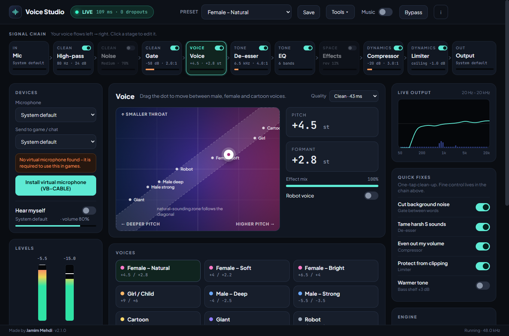
Everything in the box
Pick a voice, press start. Every knob is there when you want it, and out of the way when you don’t.
Drag one dot between male, female and cartoon. Pitch and formant move together, so a higher voice isn’t a chipmunk.
High-pass, gate, de-esser, 6-band EQ, compressor and look-ahead limiter – each with its own live meter.
Fans, keyboards and room hum disappear, even while you talk. Three strengths, about 10 ms, no cloud.
Radio, megaphone, walkie-talkie and cave voices, plus reverb, echo and chorus.
Play local files or paste a link. Teammates hear it, and it ducks automatically when you talk.
Pads with their own keys, a global hotkey per voice and a one-key quick switch that works in games.
The voice follows the program in front: one voice in Valorant, another in Discord, back to normal after.
Tray icon, a global shortcut and a small always-on-top panel that never steals focus from your game.
Import and share .vsp voices, browse community voices, A/B test yourself and find your voice.
Change voice from your phone, even in exclusive fullscreen. Local network only, with a pairing code.
A first-run wizard sets your level, and “Why can’t they hear me?” finds the broken link in seconds.
Checks GitHub Releases on launch and shows an update chip. One click installs and relaunches.
Signal chain
Click any stage to edit it. Switch it off and the chain routes around it – no clicks, no pops.
Voice
Drop the dot anywhere. The shaded diagonal is the natural-sounding zone, where pitch and formant agree.
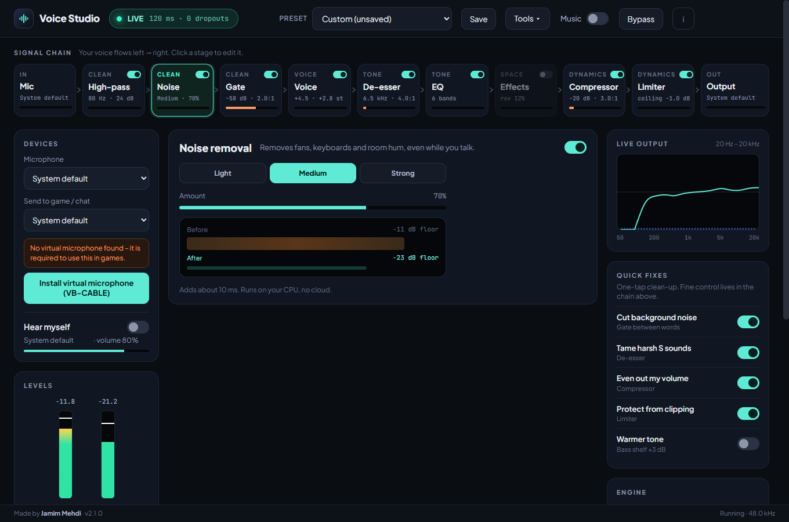
Clean
Noise removal learns your room and takes out fans, keyboards and hum. A live before / after reading shows exactly what it removes.
Tone
Six bands, each a draggable handle on the live spectrum. Scroll over a handle to change its Q, double-click to reset it.
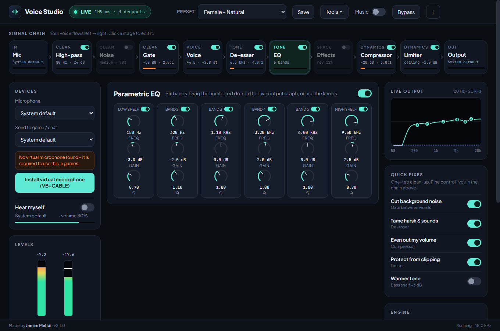
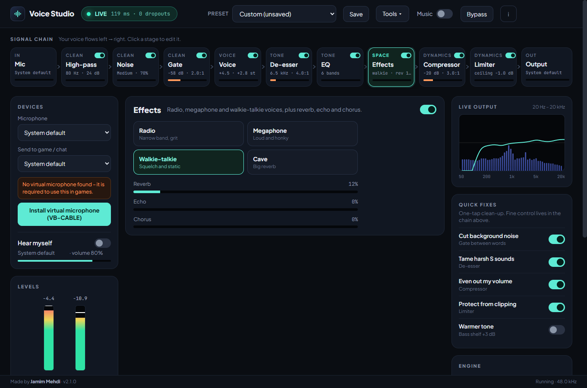
Space
Four characters and three amounts. Choose Walkie-talkie for your squad, Cave for a laugh, or just a touch of reverb to warm things up.
Dynamics
A soft-knee compressor with parallel mix evens out your level, and a look-ahead limiter makes sure nothing clips the game chat.
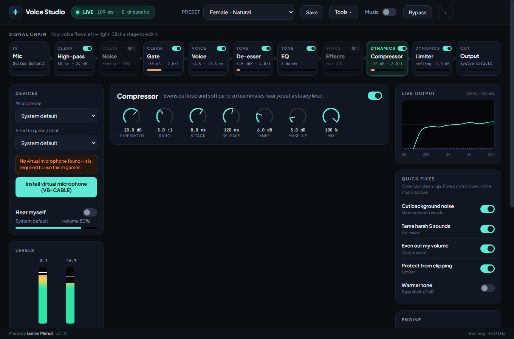
Tools
Everything below lives in the Tools menu, one click from the studio.
Soundboard & hotkeys
Drop clips on the board and give each a key. Give every voice a global hotkey, too: jump to the cartoon voice for one joke, and a second press brings you back.
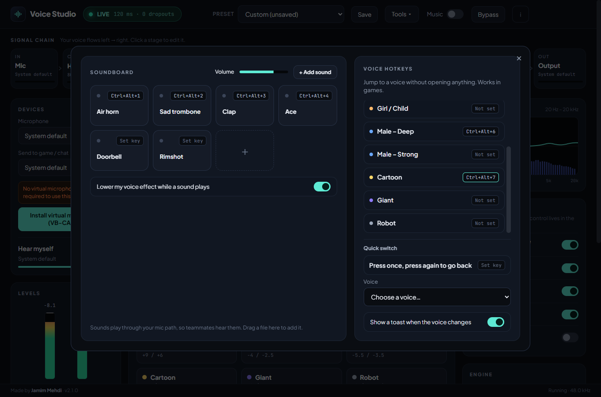
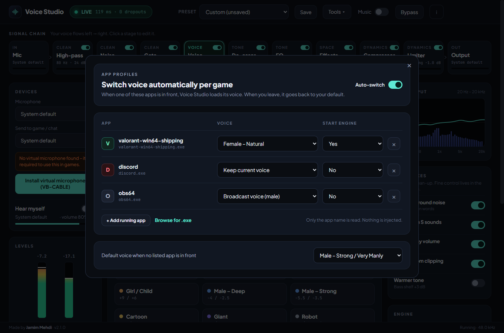
App profiles
Add the programs you play and pick a voice for each. Voice Studio loads it when the game comes to the front and returns to your default when you leave.
Voice library
Export any voice as a small .vsp file, import a friend’s, or pick from community voices. Record ten seconds to compare the raw you with the processed you.
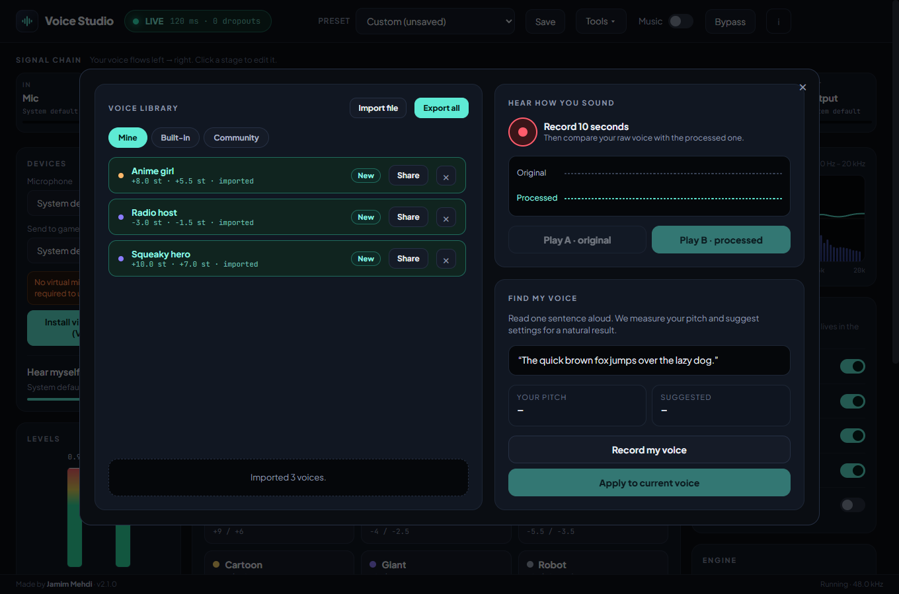
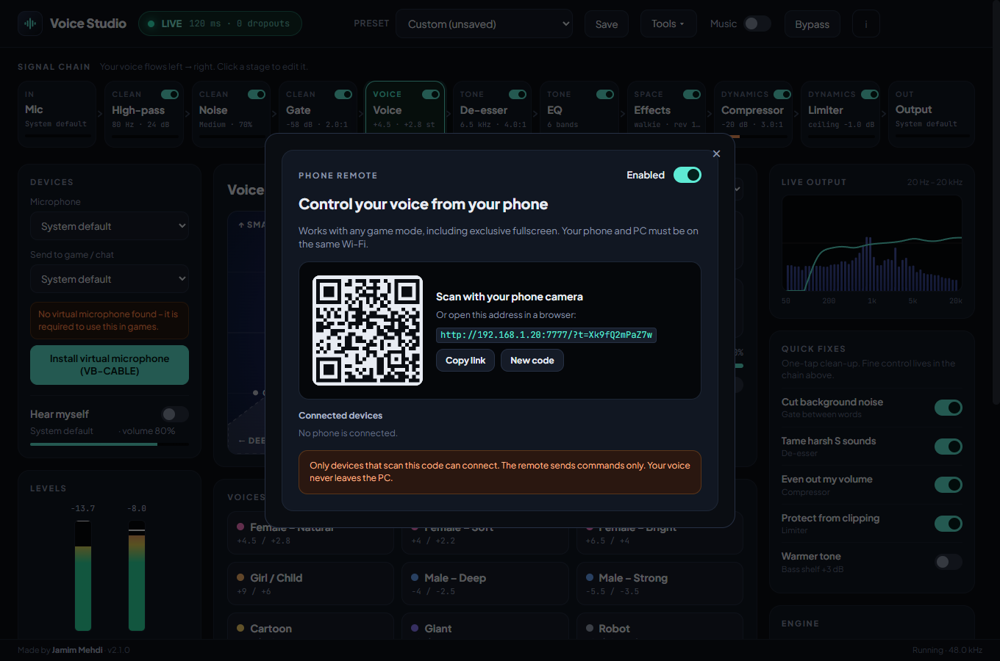
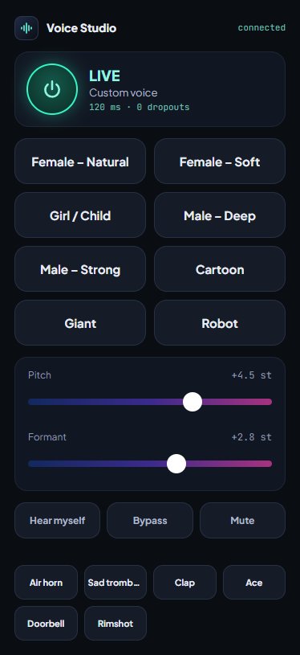
Phone remote
Overlays can’t draw over exclusive fullscreen games, so put the controls on your phone. Scan a QR code, and the same voices, sliders and sound pads are in your hand.
Compact panel
Close the main window and Voice Studio keeps running in the tray. Press Ctrl + Alt + V to bring up the compact panel over your game, change voice, then shrink it to a floating icon.
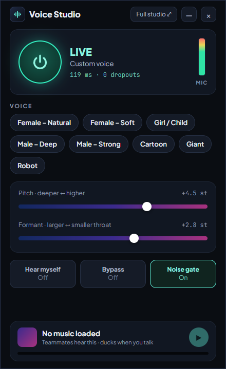
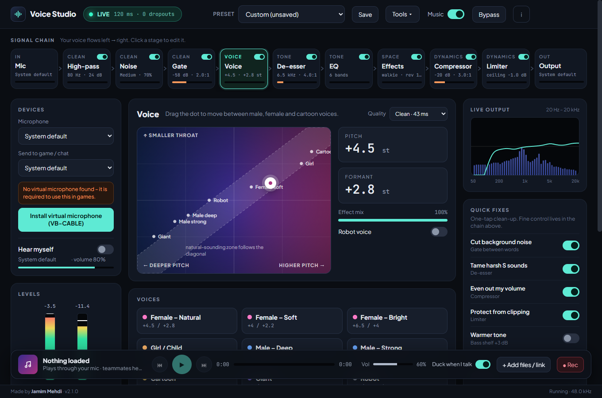
Music player
A floating player sends tracks through your mic path. It ducks while you speak, so your voice always wins.
Getting set up
The first-run wizard installs the virtual mic, listens to you and sets your level. If teammates can’t hear you later, one click checks every link in the chain and fixes what it can.
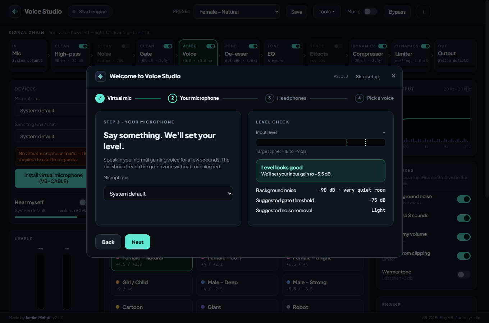
Game setup
Voice Studio sends your processed voice into a virtual microphone. You pick that microphone in the game, once.
Anti-cheat: Voice Studio never injects into the game or touches its memory – it is just an audio device. The compact panel works in borderless or windowed fullscreen; for exclusive fullscreen use the phone remote.
Tip: menu names differ between game versions. If you can’t find the option, search the settings for “microphone” or “voice”.
The setup wizard does it for you: choose Install Driver in the VB-CABLE window and restart your PC once.
Turn on Hear myself and pick your headphones as the monitor device. Never monitor through speakers.
Choose a preset, press Start engine, and talk. The LIVE pill shows your latency and dropouts.
Screens
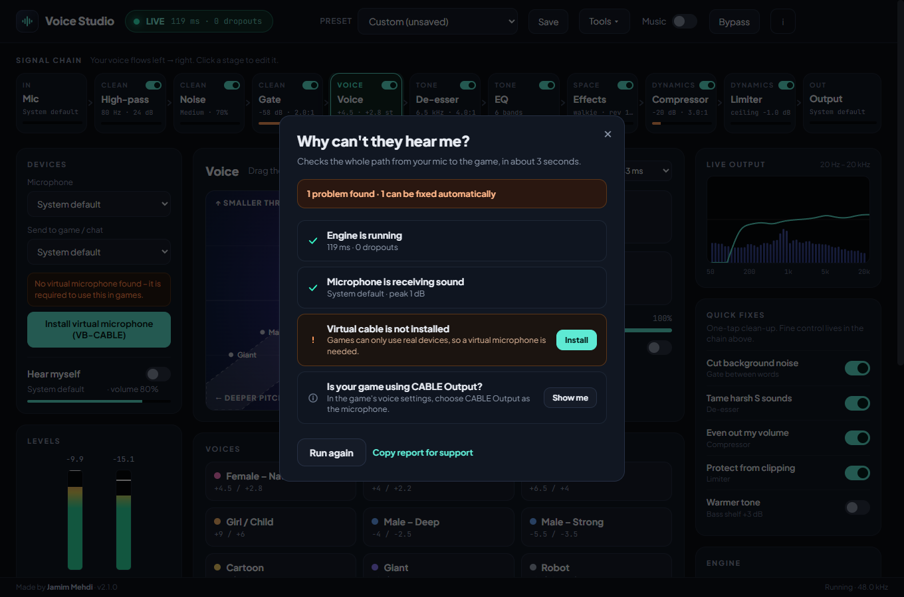
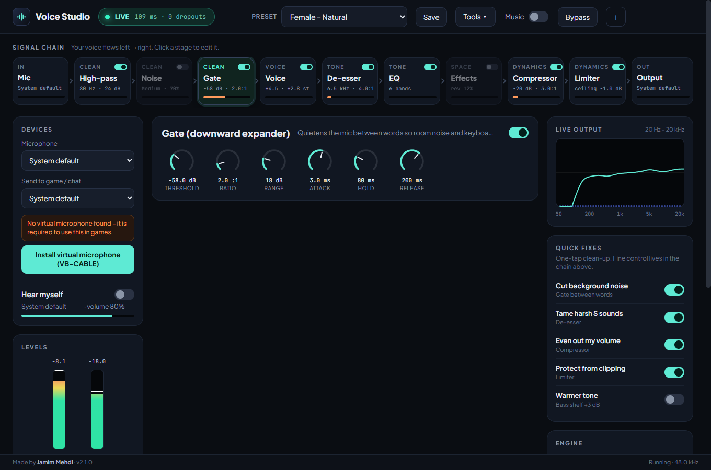
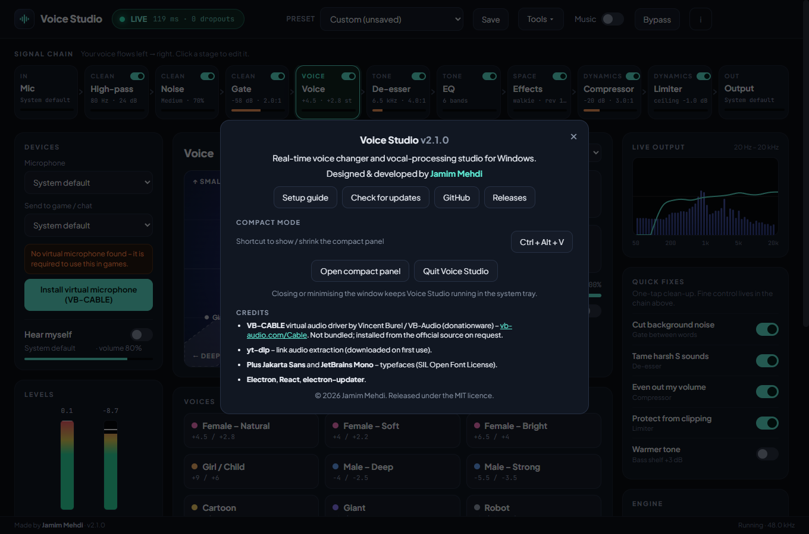
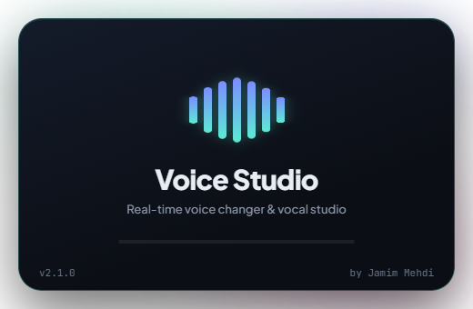
FAQ
Voice Studio is a normal Windows audio application. It does not inject code, read game memory or hook the game. App profiles only read the name of the program in front, the same way Task Manager does.
Games only accept real input devices. VB-CABLE is a free virtual device that carries the processed voice from Voice Studio into the game. Its licence doesn’t allow bundling it, so the app downloads it from vb-audio.com on request.
Open Tools → Why can’t they hear me?. It checks the engine, microphone, cable and output and can fix the common problems with one click. Restart the PC once after installing the driver.
Choose the Clean or Studio voice model in the Engine card and keep Auto buffer on. Keep pitch changes within about ±6 semitones and use formant for the rest.
No. It is a spectral noise suppressor that runs on your CPU in about 10 ms and needs no download. It learns your room continuously, so it also follows a fan that starts halfway through.
It only answers devices on private network addresses, needs a random pairing code, accepts a short list of control messages and nothing else, and never carries audio. You can disconnect a phone or renew the code at any time.
Overlays show over borderless and windowed-fullscreen games. Exclusive fullscreen hides all overlays; switch the game to borderless, or use the phone remote.
The installer isn’t code-signed yet. Choose More info → Run anyway. The source code is public on GitHub.
No. Audio is processed on your PC and never sent anywhere. The only network calls are update checks, the community voice list and the optional VB-CABLE / link downloads you start yourself.
Free, open source and a two-minute setup.